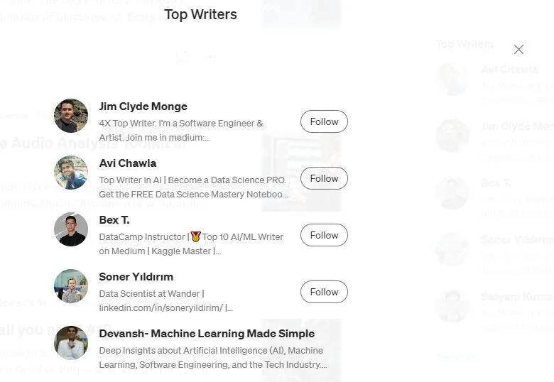

How to become very good at Machine Learning
Medium has a list of the people they consider their top writers. These lists are tracked by topic. I’ve been on their official top writers' list for AI, Technology, Business, and Education for a while. Yesterday, I cracked their top 5 writers for AI. I’m also ranked number 6 when it comes to articles on Technology and number 10 for education. My content has seen explosive growth over the last 2–3 months, and a large part has been all of you. All the feedback you’ve shared has helped me improve my content.

To celebrate this, I have a special post for you. I’m going to talk about the approach that I used to master difficult Machine Learning ideas and concepts on my own, without a Master’s Degree or without paying for expensive boot camps/courses. I did it using the free resources available on the internet. Even if you’re someone who hates ML with every fiber of their being, read on. This system for learning things will be useful to you to master your chosen domain.
And no I’m not going to tell you to go Kaggle/or do some generic personal projects. I have something that will help you build a much more comprehensive insight into the topics behind Machine Learning.
Are you ready to get into it? This is an approach that a lot of the people that have reached out to me for mentorship have benefitted from.
Key Highlights
-
The current standard advice for beginners in ML- When it comes to telling beginners in ML how they should learn ML, the standard advice is to do a project. Often accompanied by a list of standard projects that every wannabe ML person has on their resume. Some even throw the ‘do a course’.
-
Why this advice is bad- Projects and courses can be great because of the structure they provide. However, relying on them exclusively will turn this strength into a weakness. Projects will teach you how to do things. They will not teach you what to do. Many times, tutorials and courses do a lot of the legwork for you. Thus you will not be equipped for the messiness of real-world challenges.
-
What you should do instead- Read. Yes, I say this a lot. It’s because this works. Specifically, start reading actual Machine Learning Research papers. Yes, even if you’re a beginner who knows very little. I’ll go over an overview of what to do in this article. A more in-depth piece on how to interact with very technical documents/talks will be covered on another Saturday.
-
For best results- Once you come across ideas, now is when you can try mini-projects for learning how to actually implement these ideas. This will expose you to the coding and the various frameworks available to you. Best of both worlds.

{kind=link}